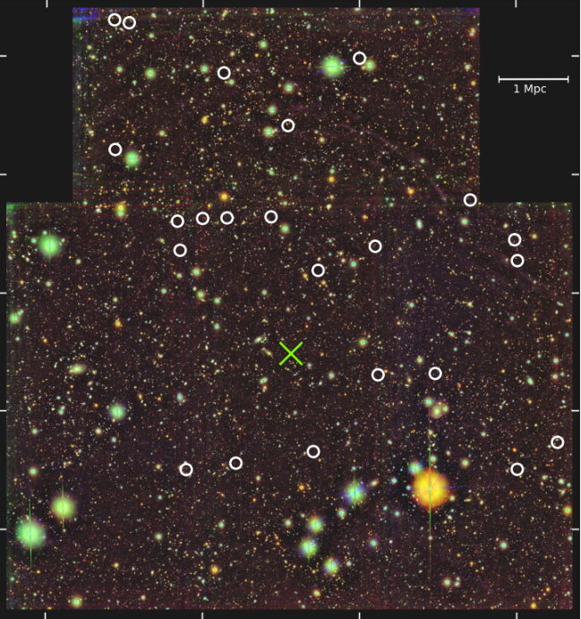

Research
Here are some research projects I've worked on. See the Research tab for more.

Large Scale Overdensity of Lyman Break Galaxies Around z=6.3 Quasar J0100+2802
Python
Astropy
Corrfunc
EAZY
I have built the Python architecture needed to select for Lyman Break galaxies, filter out low-redshift interlopers and non-astronomical sources, and calculate the photometric redshifts with EAZY given their photometric information along with calculating the angular autocorrelation function of the galaxies.

Clustering Through Cosmic Time
Python
JWST
I will use data from two JWST surveys, ASPIRE and FRESCO, to calculate the clustering of [OIII]+Hβ emitters on small scales for redshifts z~6.5-9. (Image from Costa et al. 2014)